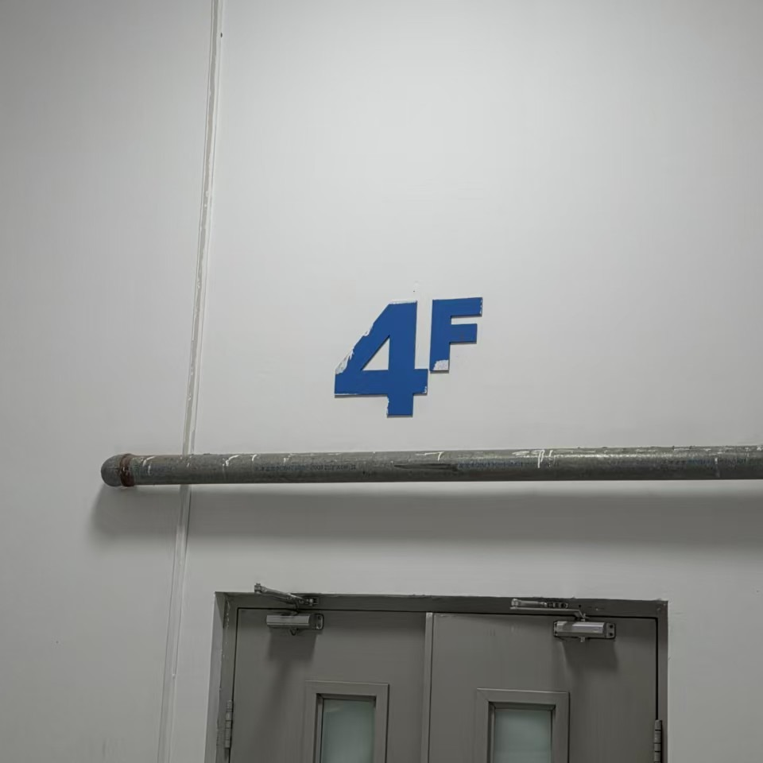

Master's Thesis
A Geometric Approach to the Axiomatization of Special Relativity
First-order axiomatization of geometric and causal structures in special relativity, with current work on coordinate representation in four-dimensional affine models and the definability of associated algebraic structures.